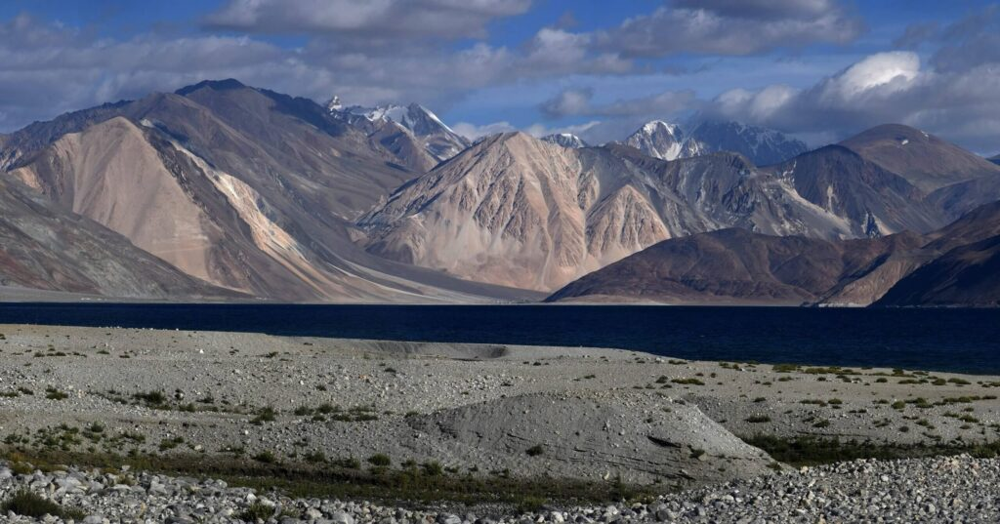
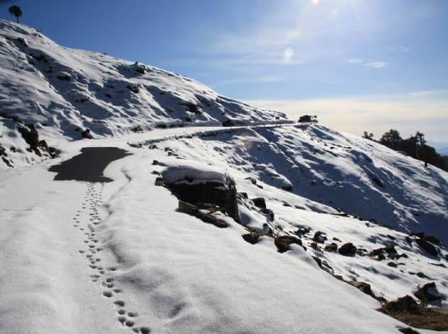
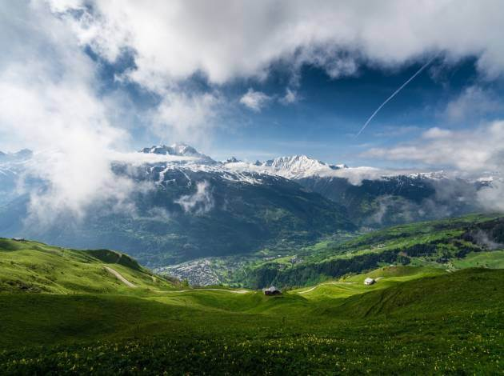

Wildlife Trekking in India

Pangong Tso is in disputed territory. The Line of Actual Control (LAC) passes through the lake. A section of the lake approximately 20 km east from the LAC is controlled by China but claimed by India. The eastern end of the lake is in Tibet. After the mid-19th century, Pangong Tso was at the southern end of Johnson Line, an early attempt at demarcation between India and China in the Aksai Chin region. The Khurnak Fort lies on the northern bank of the lake, about halfway of Pangong Tso. The Chinese has controlled the Khurnak Fort area since 1958.[15] To the south is the smaller Spanggur Tso lake. On 20 October 1962, Pangong Tso saw military action during the Sino-Indian War, successful for the Chinese People's Liberation Army (PLA).[16] The area remains a sensitive border point along the LAC.[17][18] Incursions from the Chinese side are common.[19]

Uttarakhand, the epitome of pure nature, singing birds, verdant forests, mossy meadows, glowing lakes and more importantly numerous idyllic villages in the foothills of the Himalayas. If you are an adventure junkie, we are sure about what you’re thinking about all of these. Right, all these make Uttarakhand a perfect spot for trekking holidays. Both divisions of the state, Garhwal and Kumaon, are home to countless trails that will bring you close to the bliss the Himalayas radiate in these places. Trekking in Uttarakhand, specifically when speaking of the trekking trails, some of them are for beginners while others are for only experts. But, both the Garhwal & Kumaon Himalayas will offer you a backpack of unforgettable memories to cherish forever. Most importantly, Uttarakhand is one such place where you can opt for trekking in all seasons throughout the year. Be it a spiritual trek like Panch Kedar Yatra or a wildlife one or a hike just to adore nature, Uttarakhand has everything for every trekker. If you are enough motivated by reading till now and searching for suitable trekking tours in Uttarakhand for yourself, then this section of our website is the right place for you. Contact us for any kind of Uttarakhand trekking tour packages; ask us, we got you covered. Hurry up and book your seat to get an early bird discount upto 30% if you want to trek with us in Uttarakhand this season.

Himachal Pradesh is one of the most preferred destinations for trekking enthusiasts in India. In fact, you will find some of the most captivating and challenging treks here to enjoy the bliss of adventures. Protected by the lofty Himalayas and numerous mountain ranges, it is a treasure trove for trekkers who love mountain adventures. Moreover, for nature lovers there are scenic trekking trails of mesmerizing forests, cascading waterfalls, scenic riversides and many uncharted terrains which are a thing of beauty forever to explore. Only the true adventurous soul will dare to tread the unknown paths. Himachal is indeed a great trekking destination. Some popular Treks in Himachal are Hampta Pass, Deo Tibba, Pin Parvati Pass, Buran Ghati and Friendship peak.